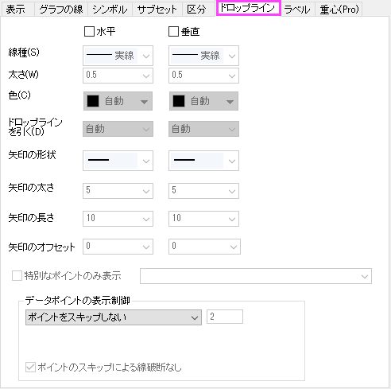
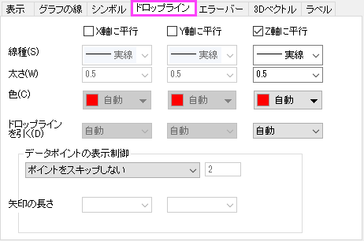
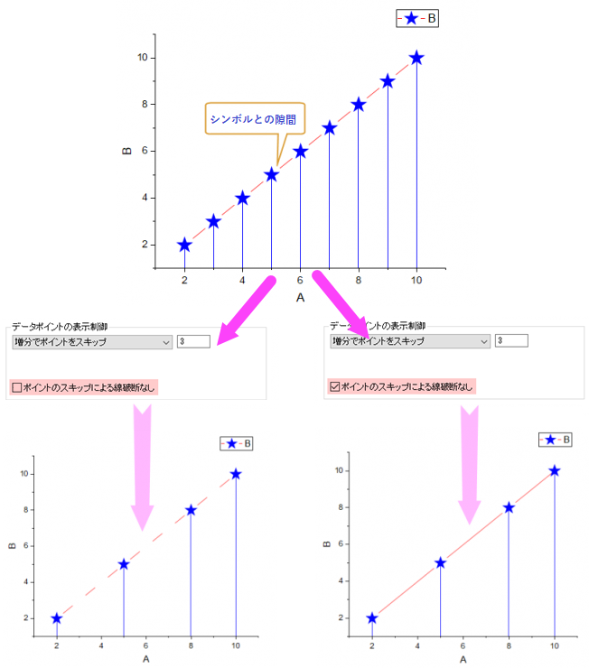

プロットシンボルを含むどの2Dデータプロットでも、プロットのシンボルを組み合わせてドロップラインを追加できます。また、3D散布図やトラジェクトリグラフでも任意の平面へ追加できます。
| 2Dグラフ |
3D散布図、2D/3D三点グラフ |
|  |  |
直交座標系の2Dグラフの場合、水平、垂直ドロップラインはオプションです。
2D三点グラフおよび3Dグラフ(3D三点グラフを含む)では、3D散布図のオリジナル と XY/ZX/YZ投影レベルのあるドロップラインタブでX/Y/Z軸に平行なドロップラインを利用できます。オリジナルレベルでは、3方向のドロップライン（X/Y/Z軸に平行）がオプションですが、XY/ZX/YZ 投影レベルでは、そのパネルの軸方向である2方向しか利用できません。例えば、XY投影レベルでは、XとY軸に平行なドロップラインのみになります。3D三点グラフ の場合、垂直Z 軸(Zh)に平行なドロップラインのみ可能です。対照的に、2D三点グラフ の場合、すべての方向にドロップラインを追加可能です。
水平/垂直、または、X/Y/Z 軸に平行チェックボックスにチェックを付け、下X軸または左Y軸に、各データポイントからの水平線または垂直線を表示します。それぞれ、線種、太さ、色をドロップダウンで選択する事により、変更できます。
データプロットの場合と同じようにカラーチューザーを使用して、ドロップラインの色を個別に指定できます。
色のドロップダウンリストで自動が選択されている場合、作図の詳細・シンボルタブのシンボルの色または縁の色で設定されている色を表示します。
希望する色を指定して、現在の方向のすべてのドロップラインに適用できます。ドロップラインにカスタムカラーを定義して使用する場合は、このページを参照してください。
カラーチューザーのポイント毎サブタブでは、データセットを私用してドロップラインの色を制御できます。
滝グラフの縦棒/横棒と同様に、ドロップラインには特別なタイプのデータセットの色の制御方法があります。
ドロップラインの色について、次のデータプロットにドロップを選択すると、Y値: 正-負がカラーチューザーのポイント毎サブタブに表示されます。
滝グラフのY値: 正-負-合計のように、この方法を選択すると、2番目のカラーリストの後の色もグレーアウト表示になります。
Note:この特別な色の制御は、他のプロットタイプのグラフオブジェクトでも使用できます。
|
ドロップダウンリストを使って、現在のドロップラインにつなぐ線（軸や追加線）や曲面（軸パネルや3Dデータの曲面）を指定します。
直交座標系の2D散布図/折れ線グラフには、ドロップダウンリストにある4つのオプションが選択可能です。
ただし、2D三点グラフ の場合、すべての方向にドロップラインを追加可能です。
直交座標系の3D散布図/トラジェクトリグラフには、ドロップダウンリストにある4つのオプションが選択可能です。
3D三点散布図の場合、垂直Z軸(Zh)に沿ったドロップラインを追加できるZ軸に平行なもののみ可能です。
直交座標系の2D散布図/折れ線グラフの場合、ドロップラインの最後に矢印を表示できます。
矢印を表示する場合は、矢印の形状、矢印の太さ、矢印の長さを指定します。矢印の太さと長さの単位はポイントです。
三点グラフと3Dグラフの場合、ドロップラインの最後に矢印を表示できません。
特別なデータポイントまたは特別なX値でドロップラインを追加できます。
ここでは、以下の5つのシンタックスが使用できます。
指定したX/Y値でドロップラインを追加した場合、指定したX/Y値にデータポイントがない場合、最も近いデータポイント間の補間した接続線で対応する値を見つけ、ドロップラインを表示します。接続線が直線のときのみ、ドロップラインをX/Y値によって指定できます。下図にサンプルを示します。
ドロップライン表示の際にデータポイントをどのようにスキップするか指定します。
ポイントをスキップせず、全データポイントが独自のドロップラインを保有します。このコントロールグループのデフォルトの選択です。
ドロップダウンリストで増分でポイントをスキップを選択するとデータポイントの頻度を表示でき、頻度をテキストボックスに入力できます。この設定は、データプロットのドロップライン、シンボル、エラーバー、およびデータラベルの表示にも影響します。ベクトルグラフの場合、散布点がスキップされるとベクトルも非表示になります。3D散布図の投影の場合、ポイントスキップオプションは非表示になり、投影は元のプロットの設定に従ってポイントをスキップします。
ポイントスキップテキストボックスにn が入力される場合、n ポイントの内最初の1つだけが表示されます。残りのn-1つのポイントはスキップされます。しかし、最後のデータポイントは常に表示されます。最後のポイントを非表示にしたい場合、@SMEP = 0に設定します。 n は2以上の整数で指定します。n = 0 または 1の場合、ポイントはスキップされません。
線+シンボルグラフでシンボルとの隙間がチェックされている場合、 ポイントのスキップによる線破断なし チェックボックスが表示され、ポイントがスキップされた場合に軸破断するかどうかを指定できます。これを選択すると、データポイントがスキップされても、線は連続したままになります。

スマートスキップオプションの何れかを選択すると、データ密度と曲線形状に基づいたスマートな演算処理を使用してデータ ポイントをスキップできます。
スキップ後に保持されるデータポイントの合計を指定することで、データポイントをスマートスキップします。
すべてのデータポイントに対する割合でスキップするデータポイントの数を指定することで、データポイントをスマートスキップします。
さまざまな曲線の形状とデータ密度に基づいて、データポイントをスキップする方法が複数あります。
このアルゴリズムに従って段階的に検索し、そのたびに、設定されたポイント数に達するまで、最大の三角形エリア (現在大きな面積の三角形と上位レベルのより小さな三角形の間) を持つ点のみが保持されます。